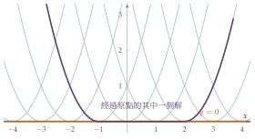

STEP III 1994，第 4 題
繼續之前，請先閱讀題目（原題為英文）。題目載於 STEP Support Programme 的題目資料庫： step.maths.org/questions/94-s3-q4
引子
微分方程（differential equation）是一條告訴你某個量如何變化的規則：牛頓（Newton）定律告訴行星，在知道自己目前位置的情況下該如何運動。古典物理學的圖像是，這樣就已足夠：只要知道世界此刻的狀態，定律便決定了它的整個未來。拉普拉斯（Pierre-Simon Laplace）曾設想有這樣一個智者，只要知道每一個位置和速度，便能預測一切。這幅圖像建基於一個數學假設：一條微分方程加上一個初始條件（starting condition），恰好只有一個解。
這道題說明這個假設可以不成立。看似平平無奇的方程 \((y')^2 = 4y\)，有些解會沿着 \(x\) 軸走，然後在自己選定的一刻離軸而去。經過某些點的解有無限多個。知道現在，並不能決定未來。找出唯一性（uniqueness）究竟在甚麼時候成立，是大學微分方程課程中最先遇到的定理之一。
動筆之前
把兩邊開平方：\(y' = \pm2\sqrt{y}\)。試試 \(y = (x - c)^2\)。它滿足這條方程嗎？有沒有更簡單的解？
若 \(y = (x - c)^2\)，則 \(y' = 2(x - c)\)，而 \((y')^2 = 4(x - c)^2 = 4y\)。所以對每一個 \(x\)，每一條拋物線（parabola）\(y = (x - c)^2\) 都是解。而 \(y = 0\) 也是解：\((0)^2 = 4 \times 0\)。請記住最後這一個解；它是整道題的關鍵。
逐步解題
階段 1 經過一點的解
哪些拋物線 \(y = (x - c)^2\) 經過 \((a, b^2)\)？
我們需要 \((a - c)^2 = b^2\)，所以 \(a - c = \pm b\)，即 \(c = a - b\) 或 \(c = a + b\)。由於 \(b \neq 0\)，這兩個值並不相同，於是得出兩個解 \[y = (x - a + b)^2 \qquad\text{及}\qquad y = (x - a - b)^2. \qed\] （我們還應該檢查有沒有遺漏：在 \(y > 0\) 的區域上，\(y' = \pm2\sqrt{y}\) 而正負號固定，並且 \(\frac{\mathrm{d}}{\mathrm{d}x}\sqrt y = \frac{y'}{2\sqrt y} = \pm1\)，所以 \(\sqrt y = \pm(x - c)\)，得出的正是這些拋物線。因此在給定的點附近，只要 \(y\) 保持為正，就只有這兩個解。不過，解一旦到達 \(x\) 軸，便可以與零解黏合起來，我們將在第 3 階段看到這一點，而這樣會多出無限多個對所有 \(x\) 都有定義的解。題目所說的「兩個解」，就是這兩條拋物線。）
階段 2 兩個點與一個共同的解
經過原點的解必定是 \(y = x^2\)（即 \(c = 0\) 的那條拋物線）。它在 \(x = 1\) 和 \(x = -1\) 處達到高度 \(1\)。所以取 \((a_1, 1) = (1, 1)\) 和 \((a_2, 1) = (-1, 1)\)。
經過 \((1, 1)\)（即 \(a = 1\)，\(b = \pm1\)）的解是 \(y = x^2\) 和 \(y = (x - 2)^2\)。經過 \((-1, 1)\) 的解是 \(y = (x + 2)^2\) 和 \(y = x^2\)。兩種情況下，經過原點的解都是同一條曲線 \(y = x^2\)。■
階段 3 整個曲線族與一條公切線
就不同的 \(c\) 值，畫出幾條拋物線 \(y = (x - c)^2\) 的草圖。哪一條直線與它們每一條都相切？這條直線本身是不是解？
每一條拋物線 \(y = (x - c)^2\) 都在其頂點 \((c, 0)\) 與 \(x\) 軸相切，所以 \(x\) 軸是整個曲線族的公切線（common tangent），亦即它們的包絡線（envelope）（圖 8.1.1）。而 \(x\) 軸，即 \(y = 0\)，本身也是這條微分方程的解。它不是那些拋物線的其中一條；它是另外一個獨立的解，稱為奇解（singular solution）。
階段 4 為何重要
從原點出發。哪些解經過原點？你能否構造一個解，先沿着 \(x\) 軸走一段，然後離開？
經過原點的有 \(y = x^2\) 和 \(y = 0\)。但事實遠不止於此。由於每條拋物線都與 \(x\) 軸相切（兩者在該處的斜率都是 \(0\)），你可以把各段平滑地黏合起來：對任意 \(c_1 \leq 0 \leq c_2\)， \[y = \begin{cases} (x - c_1)^2 & x < c_1, \\ 0 & c_1 \leq x \leq c_2, \\ (x - c_2)^2 & x > c_2 \end{cases}\] 是一個可微函數（differentiable function），處處滿足 \((y')^2 = 4y\)，並且經過原點。經過 \(x\) 軸上每一點的解都有無限多個：一個解可以隨意在 \(y = 0\) 上停留多久，然後才離開。這條公切線正正就是唯一性失效的地方。■

回顧
先找簡單的解。試一試 \(y = (x - c)^2\) 和 \(y = 0\)，便看清了整個局面。
包絡線給出奇解。一族解的公切線，本身可以是一個不屬於該族的解。
黏合。兩個解相切之處，可以把它們接合成一個新的可微解。非唯一性就是這樣蔓延開去的。
背後的數學
皮卡–林德洛夫定理（Picard–Lindelöf theorem，由皮卡（Émile Picard）和林德洛夫（Ernst Lindelöf）約於 1890–1894 年證明）指出，方程 \(y' = F(x, y)\) 連同 \(y(x_0) = y_0\) 在 \(x_0\) 附近恰好有一個解，條件是 \(F\) 對 \(y\) 滿足利普希茨（Lipschitz）條件：存在常數 \(L\) 使得 \(|F(x, y_1) - F(x, y_2)| \leq L|y_1 - y_2|\)。粗略地說，當 \(y\) 變化時，\(F\) 不可以變化得無限快。我們的方程是 \(y' = \pm2\sqrt y\)，而 \(\sqrt y\) 在 \(y = 0\) 處的斜率是無限大：它在該處不滿足利普希茨條件，而那裏正是唯一性失效的地方。（皮亞諾（Giuseppe Peano）在 1886 年證明了單憑 \(F\) 的連續性（continuity）已能保證解存在，但不能保證解唯一。）皮卡–林德洛夫定理的證明用到一個迭代（iteration），它憑藉 第 2.2 節 的壓縮映射原理（contraction mapping principle）而收斂。
漏水的水桶
以下是一個物理例子。一個底部有孔的水桶按照托里拆利定律（Torricelli’s law）流乾：水的高度 \(h\) 滿足 \(h' = -k\sqrt h\)。讓時間向前走，一切都沒有問題：水桶流乾，然後一直是空的。但讓時間倒流：假如你發現一個空桶，這條方程無法告訴你它是甚麼時候流乾的。在所有時間都有 \(h = 0\) 的解，以及那些直到某一刻仍然盛滿、然後才流乾的解，全都與「現在是空的」相符。這種非唯一性，正是「關於過去的資訊已經失去」這個事實在數學上的投影。
Norton 圓頂
2003 年，哲學家 John Norton 描述了一個無摩擦的圓頂，其形狀使得一個恰好放在頂端的球所遵從的牛頓定律，形式為 \(r'' = \sqrt r\)。其中一個解是球永遠停在頂端。但還有其他的解：球在頂端停留任意長的時間，然後在沒有任何原因的情況下，自發地朝任意方向滾下。這個例子至今仍有爭論：古典力學到底是否決定論（deterministic）的？從數學上看，這正是本題所見的那種非唯一性。
思維技巧
找到一個解，並不表示它是唯一的解。要問一問是否還有其他解，尤其是當方程涉及不光滑的函數時。
在大學裏，存在性與唯一性定理（existence and uniqueness theorems）會確切地告訴你需要甚麼條件。在這裏，一個在零處斜率無限大的平方根，已足以破壞唯一性。
延伸練習
兩種增長率。試做 STEP II 2018，第 8 題。該題用代換法（substitution）解兩條增長方程。然後想一想，為甚麼 \(y = 0\) 也是具有相同初始值的解，而這對唯一性又說明了甚麼。
漏水的水桶。解 \(h' = -k\sqrt h\)，其中 \(h(0) = h_0 > 0\)。水桶在甚麼時候變空？寫出兩個不同的解，使得對某個 \(T\) 有 \(h(T) = 0\)，並且對所有 \(t \geq T\) 有 \(h(t) = 0\)。
恢復唯一性。證明 \(y' = 2y\) 連同 \(y(0) = 0\) 只有 \(y = 0\) 這一個解。（提示：考慮 \(\frac{\mathrm{d}}{\mathrm{d}x}(ye^{-2x})\)。）\(2y\) 具有甚麼性質，是 \(2\sqrt y\) 所沒有的？
立方。求 \(y' = 3y^{2/3}\) 經過原點的所有解。
延伸閱讀
Morris Hirsch, Stephen Smale & Robert Devaney, Differential Equations, Dynamical Systems, and an Introduction to Chaos（Academic Press）。講述存在性與唯一性，以及本章其餘的大部分內容。
George Simmons, Differential Equations with Applications and Historical Notes（CRC Press）。一本經典著作，富於歷史掌故；書中討論了奇解與包絡線。
John Norton, 「The dome: an unexpectedly simple failure of determinism」，Philosophy of Science 75 (2008)。篇幅短小，容易閱讀。